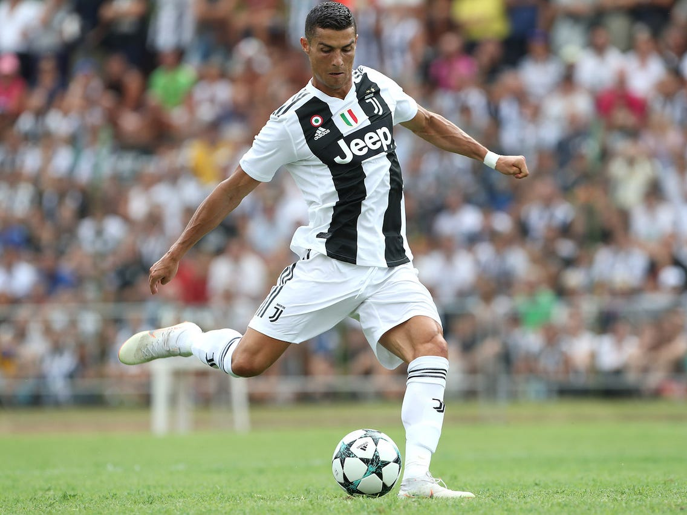
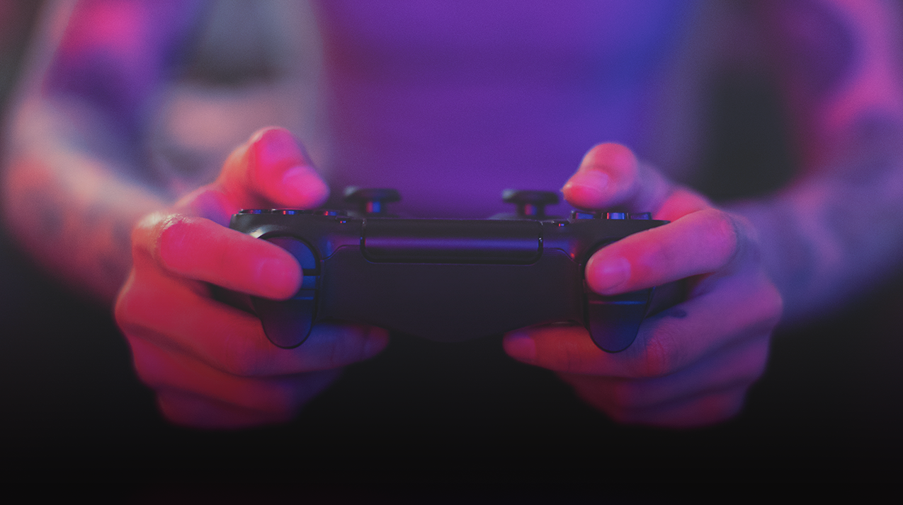

My Interests:
 
I love exploring things and going beyond limits, so I'm always on the go to learn something new. This makes me a very competitive person. On the outset, im very passionate about sports, like football, cricket, chess and badminton. I've been following football since a very long time, and i consider Ronaldo as my role model, not just because of the person he is on the field, but also for the kind of person he is off the field. Unarguably, he has the best mindset, and never gives up so easily, which makes me wonder how hard working a person can be ! At the same time, I'm a harcore gamer, who is interested in Action thriller games. Not to mention, I'm a professional coder, who has 5 years of experience in programming. My interest for coding grew since the time i started to wonder how a 3-D image is displayed on a 2-D screen. Over time, my interests keep growing as i expand my boundaries !